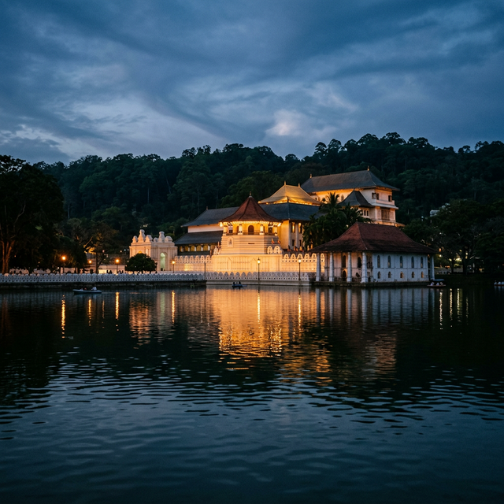
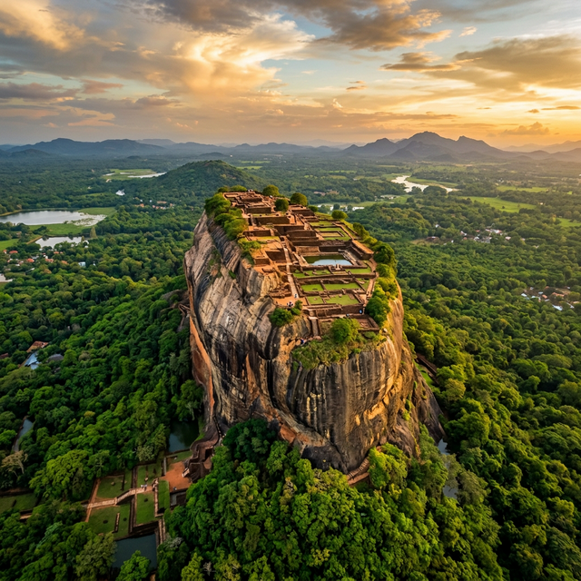
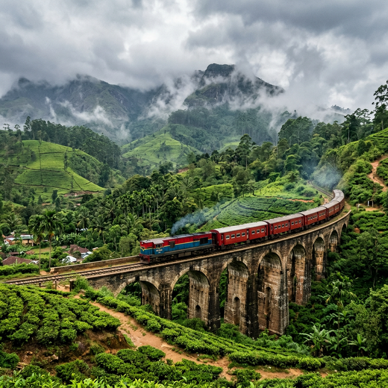
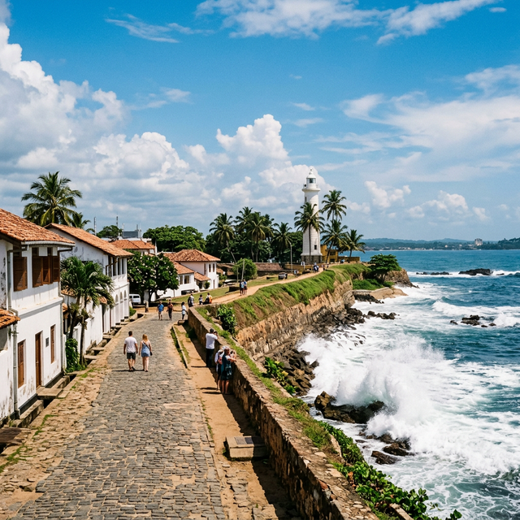
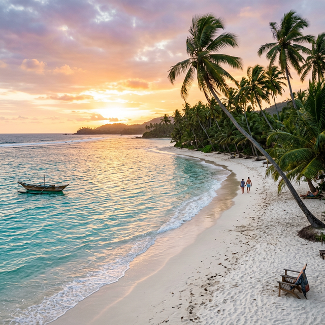
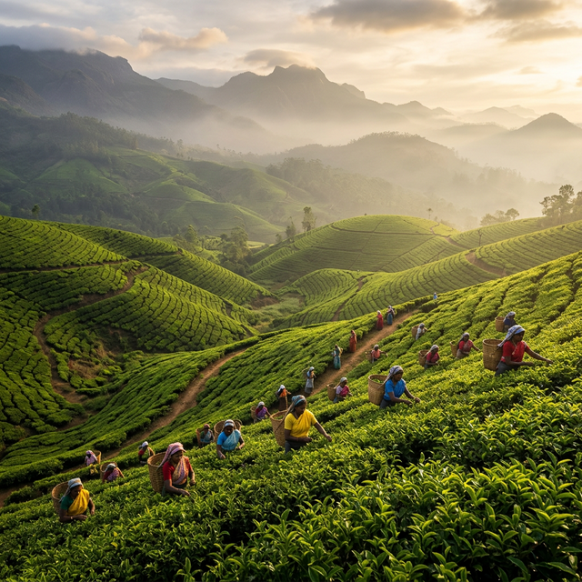
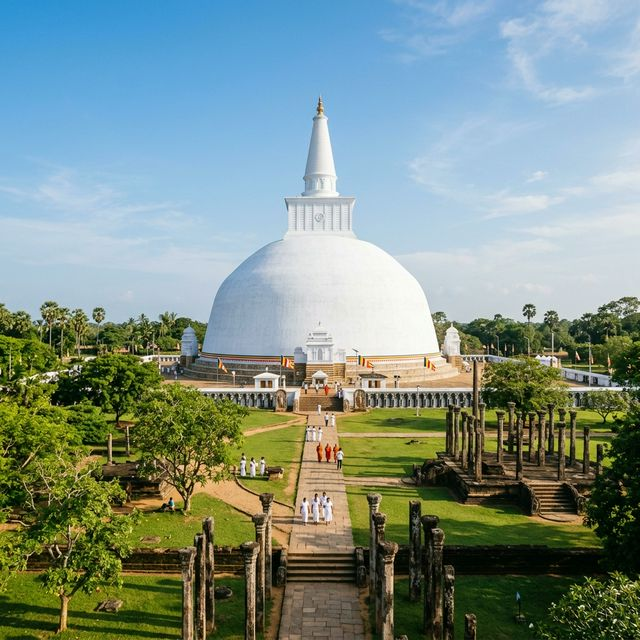
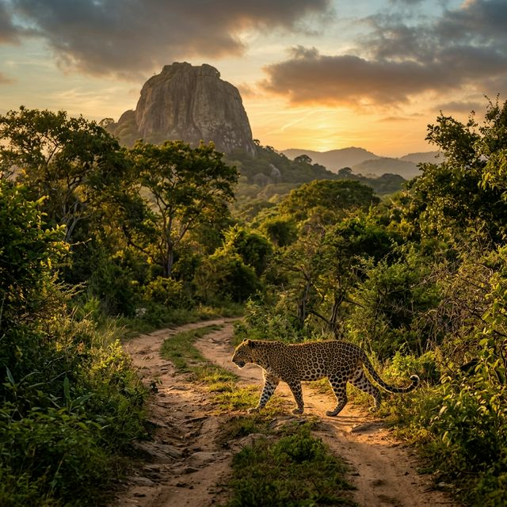

From ancient kingdoms to pristine beaches, experience a land where every corner tells a story.
A tropical island blessed with ancient history, diverse wildlife, rich culture, and some of the most beautiful landscapes on Earth.
Explore ancient kingdoms, UNESCO World Heritage Sites, and centuries-old temples that tell the island's story.
Lush rainforests, misty mountains, rolling tea estates, and crystal clear waterfalls await your discovery.
Miles of golden sandy beaches with turquoise waters on both east and west coasts, perfect year-round.
Experience colorful festivals, traditional dances, delicious cuisine, and the warmth of Sri Lankan hospitality.
Hand-picked destinations that showcase the very best of Sri Lanka's breathtaking beauty.
Find your next destination on our interactive map

An ancient rock fortress rising 200 meters above the surrounding jungle. Built by King Kashyapa in the 5th century, it features remarkable frescoes, water gardens, and panoramic views.
Sri Lanka's most sacred Buddhist site, housing the relic of the tooth of the Lord Buddha. Set beside the picturesque Kandy Lake, surrounded by cloud-kissed mountains.

An iconic colonial-era viaduct nestled deep in the lush green tea country. Watch vintage trains cross this century-old bridge with misty mountains as the dramatic backdrop.

A well-preserved Dutch colonial fortress perched on a rocky headland. Wander cobblestone streets lined with boutique hotels, art galleries, and stunning ocean vistas.

A crescent-shaped bay with turquoise waters and golden sands. Famous for whale watching, surfing, and spectacular sunsets. The ideal tropical getaway in the south coast.

Sri Lanka's "Little Britain" sits at 1,868m above sea level, blanketed by rolling emerald tea estates. Enjoy cool misty mornings, colonial bungalows, and world-famous Ceylon tea.

The first capital of Sri Lanka, established in the 4th century BC. Home to massive stupas, ancient palaces, and the sacred Jaya Sri Maha Bodhi tree.

The most visited national park in Sri Lanka, famous for having the highest density of leopards in the world. Experience a thrilling safari in the wild.
A visual journey through Sri Lanka's most stunning landscapes and iconic landmarks.
December to March for the west and south coasts. May to September for the east coast. Year-round for the cultural triangle.
Sri Lankan Rupee (LKR). ATMs are widely available in cities. Carry some cash for rural areas and local markets.
The scenic train route from Kandy to Ella is a must-do. Tuk-tuks, buses, and rental vehicles are readily available.
Try rice and curry, hoppers, kottu roti, and fresh seafood. Sri Lankan food is bold, spicy, and absolutely delicious.
Convert foreign currencies dynamically into Sri Lankan Rupees (LKR) using live feeds.
Have questions about visiting Sri Lanka? Want personalized travel recommendations? Fill out the form and we'll get back to you within 24 hours!
info@exploresrilanka.lk
+94 11 234 5678
Colombo, Sri Lanka